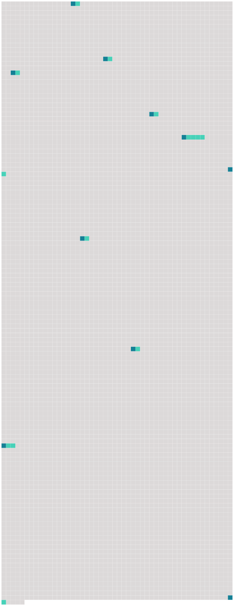

Longueur nb maillons : 10 mentions |
 |
Il n’ y consentit pas ; il se tourna contre le mur et se cacha [la tête] dans son bras. [27 phrases] Les deux autres, immobiles à quelques pas, le regardaient des pieds à [la tête] , se poussaient du coude, et ricanaient. [6 phrases]
Indigné de cette prétention que son habit fût à un autre, il secoua [la tête] avec énergie, pour nier. [27 phrases] Il s’ écorcha les mains, faillit se casser [la tête] ; et, pour comble de malheur, son vêtement éclata aux genoux, et ailleurs. [11 phrases]
Il s’ arc-bouta sur ses genoux et ses mains, se secoua comme un chien, fit rouler ses persécuteurs ; et, comme ils revenaient à la charge, il fonça [la tête baissée sur eux] , gifla la petite fille, et jeta d’ un coup de poing le garçon au milieu d’ une plate-bande. [21 phrases]
Il aurait voulu être rentré, pour se soulager de ses larmes ; il avait la gorge serrée, le sang à [la tête] : il éclatait. [35 phrases]
Il tapa des poings, des pieds, de [la tête] , contre le mur, hurla, fut pris de convulsions, et, se meurtrissant aux meubles, tomba par terre. [69 phrases] Son robuste estomac était à la torture ; parfois il en tremblait, [la tête] lui faisait mal ; il avait un trou dans la poitrine, un trou qui tournait et qui s’ élargissait comme une vrille qu’ on enfonce. [46 phrases] Le corps de Melchior vacilla comme une chose molle, faillit tomber ; sa tête s’ inclina vers [celle de Christophe] ; il le regarda, en gargouillant des syllabes incohérentes et irritées. [70 phrases] Un jour, il fallut le dégager, presque étouffé, d’ une de ces mêlées furieuses, où il avait roulé sous son adversaire, qui lui cognait avec férocité [la tête] sur le pavé. |
 |
La ressource peut être téléchargée sur la page Ortolang
Si vous avez des questions ou vous voyez des erreurs, merci d'envoyer un mail à silvia.federzoni89@gmail.com
Site développé par S. Federzoni (contact)